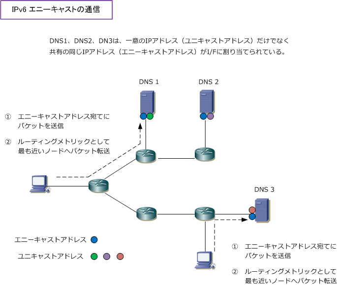

IPv6 - anycast address
IPv6 - エニーキャストアドレス
エニーキャストアドレスとは、複数のノードのインターフェースに割り当てた同一のIPアドレスのことです。 複数のノードで同じIPアドレスを共有することになり、送信元ノードからエニーキャストアドレスに対して パケットを送信した場合は、このエニーキャストアドレスを持つ最も近いノードへパケットが転送されます。

通信の結果としては上図のとおり、ユニキャスト通信と同様に1対1の通信が行われます。また、エニー キャストアドレスにはグローバルユニキャストアドレスが使用されることから、エニーキャストアドレス と言っても、表記上ではグローバルユニキャストアドレスとエニーキャストアドレスの区別はつきません。
サーバのインターフェースには、一意であるグローバルユニキャストアドレスを割り当てるのに加えて グループを識別するエニーキャストアドレスを割り当てます。ノードのI/Fでは受信したデータグラムの 宛先アドレスを調べてユニキャストアドレスかエニーキャストアドレスなのかを調べてしかるべき処理を 行います。上図では、エニーキャストアドレスを使用することでDNSサーバの冗長化と負荷分散を実現。
このエニーキャストアドレスは、IPv6で標準で実装されました。IPv4ではマルチキャストアドレスが同じ ような動作をしますが、エニーキャストアドレスとマルチキャストアドレスには、以下の違いがあります。
| 通信方式 | 説明 |
|---|---|
| エニーキャスト | エニーキャストの場合、同じアドレスが登録されたI/Fの中で1つだけが受信 |
| マルチキャスト | マルチキャストの場合、同じアドレスが登録されたI/Fの全てがパケットを受信 |